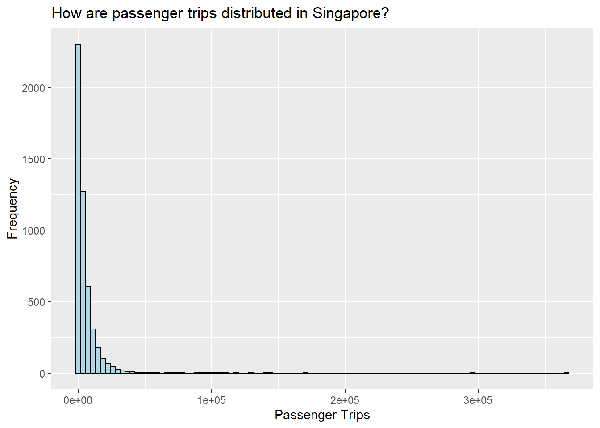
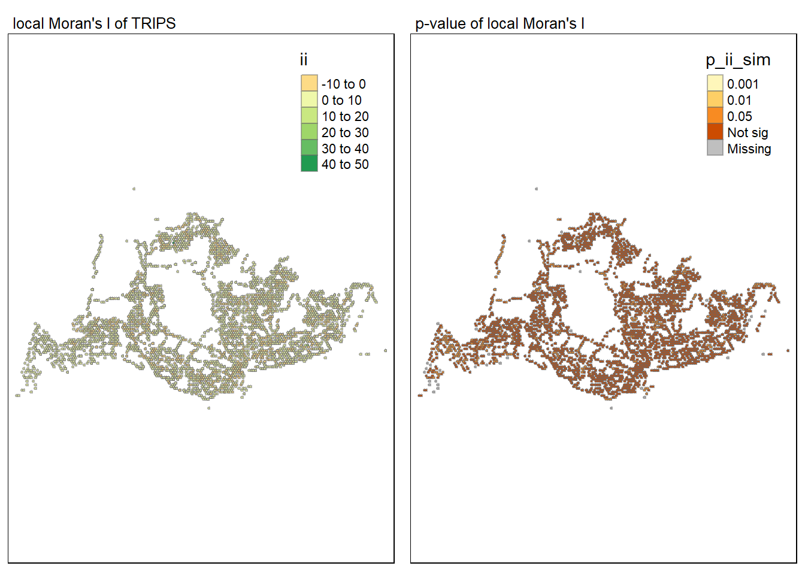

pacman::p_load(tmap, sf, tidyverse, knitr, sfdep, plotly)Take-home Exercise 1: Geospatial Analytics for Public Good
1 Overview
Transportation is a pivotal aspect of daily life for Singaporean residents. In 2022, an average of around 3.4 million passengers utilized public buses each day in Singapore, marking a steady rebound from the significant decline during the COVID-19 pandemic1. Noteworthy advancements have been made in the enhancement of bus stops and interchanges, exemplified by projects like the Jurong Town Bus Interchange in November 20232. Additionally, there have been alterations in bus services, including the cancellation of service 167, reflecting ongoing developments in Singapore’s transportation infrastructure 3.
2 Getting Started
2.1 Objectives
Exploratory Spatial Data Analysis (ESDA) hold tremendous potential to address complex problems facing society, such as transportation issue and development. In this study, I will demonstrate how to apply geospatial visualisation and appropriate Local Indicators of Spatial Association (LISA) to undercover the spatial and spatio-temporal mobility patterns of public bus passengers in Singapore. I will also propose some recommendations in this study.
2.2 The Study Area
The focus of this study would in Singapore, mainly the public bus passengers in Singapore
2.3 Setting the Analytical Tools
The code chunk below installs and loads tmap, sf, tidyverse, knitr, sfdep and plotly
3 Data Preparation
3.1 Data
3.1.1 Aspatial data
Passenger Volume by Origin Destination Bus Stops will be downloaded from LTA DataMall. Three months dataset are downloaded: Aug, Sep and Oct 23. This study will use only Aug 23 data.
Below are the detailed steps to obtain the dataset:
- Go to LTA DataMall -> Head to Dynamic Datasets -> Request for API Access
- You will receive an email with subject head ” LTA DataMall | Registration Confirmation”. Please take note of the API Account Key

3.1.2 Geospatial data
Two geospatial data will be used in this study, they are:
- Bus Stop Location from LTA DataMall. It provides information about all the bus stops currently being serviced by buses, including the bus stop code (identifier) and location coordinates. This is downloaded from LTA DataMall -> Static Datasets -> Under Search Bar type: “Bus Stop” -> Download the SHP file
- hexagon, a hexagon layer of 250m (this distance is the perpendicular distance between the centre of the hexagon and its edges.). Guidance on how it is created is located here. It will be demonstrated in the Section 4.2 Hexagon.
3.2 Importing the data into R Environment
3.2.1 Importing Aspatial data into R
Firstly, we will import the Passenger Volume by Origin Destination Bus Stops data set downloaded from LTA DataMall by using read_csv() of readr package.
odbus <- read_csv("data/aspatial/origin_destination_bus_202308.csv")Rows: 5709512 Columns: 7
── Column specification ────────────────────────────────────────────────────────
Delimiter: ","
chr (5): YEAR_MONTH, DAY_TYPE, PT_TYPE, ORIGIN_PT_CODE, DESTINATION_PT_CODE
dbl (2): TIME_PER_HOUR, TOTAL_TRIPS
ℹ Use `spec()` to retrieve the full column specification for this data.
ℹ Specify the column types or set `show_col_types = FALSE` to quiet this message.A quick check of odbus tibble data frame shows that the values in OROGIN_PT_CODE and DESTINATON_PT_CODE are in numeric data type.
glimpse(odbus)Rows: 5,709,512
Columns: 7
$ YEAR_MONTH <chr> "2023-08", "2023-08", "2023-08", "2023-08", "2023-…
$ DAY_TYPE <chr> "WEEKDAY", "WEEKENDS/HOLIDAY", "WEEKENDS/HOLIDAY",…
$ TIME_PER_HOUR <dbl> 16, 16, 14, 14, 17, 17, 17, 17, 7, 17, 14, 10, 10,…
$ PT_TYPE <chr> "BUS", "BUS", "BUS", "BUS", "BUS", "BUS", "BUS", "…
$ ORIGIN_PT_CODE <chr> "04168", "04168", "80119", "80119", "44069", "4406…
$ DESTINATION_PT_CODE <chr> "10051", "10051", "90079", "90079", "17229", "1722…
$ TOTAL_TRIPS <dbl> 7, 2, 3, 10, 5, 4, 3, 22, 3, 3, 7, 1, 3, 1, 3, 1, …odbus$ORIGIN_PT_CODE <- as.factor(odbus$ORIGIN_PT_CODE)
odbus$DESTINATION_PT_CODE <- as.factor(odbus$DESTINATION_PT_CODE) Now, ORIGIN_PT_CODE and DESTINATON_PT_CODE are in factor data type now.
glimpse(odbus)Rows: 5,709,512
Columns: 7
$ YEAR_MONTH <chr> "2023-08", "2023-08", "2023-08", "2023-08", "2023-…
$ DAY_TYPE <chr> "WEEKDAY", "WEEKENDS/HOLIDAY", "WEEKENDS/HOLIDAY",…
$ TIME_PER_HOUR <dbl> 16, 16, 14, 14, 17, 17, 17, 17, 7, 17, 14, 10, 10,…
$ PT_TYPE <chr> "BUS", "BUS", "BUS", "BUS", "BUS", "BUS", "BUS", "…
$ ORIGIN_PT_CODE <fct> 04168, 04168, 80119, 80119, 44069, 44069, 20281, 2…
$ DESTINATION_PT_CODE <fct> 10051, 10051, 90079, 90079, 17229, 17229, 20141, 2…
$ TOTAL_TRIPS <dbl> 7, 2, 3, 10, 5, 4, 3, 22, 3, 3, 7, 1, 3, 1, 3, 1, …3.2.2 Extracting the study data
Data will extracted basing on the following timing:
3.2.2.1 For Weekday morning peak (6 to 9)
origin6_9 <- odbus %>%
filter(DAY_TYPE == "WEEKDAY") %>%
filter(TIME_PER_HOUR >= 6 &
TIME_PER_HOUR <= 9) %>%
group_by(ORIGIN_PT_CODE) %>%
summarise(TRIPS = sum(TOTAL_TRIPS))kable(head(origin6_9))| ORIGIN_PT_CODE | TRIPS |
|---|---|
| 01012 | 1973 |
| 01013 | 952 |
| 01019 | 1789 |
| 01029 | 2561 |
| 01039 | 2938 |
| 01059 | 1651 |
Output is saved in rds format for future used.
write_rds(origin6_9, "data/rds/origin6_9.rds")The code chunk below will be used to import the save origin6_9.rds into R environment.
origin6_9 <- read_rds("data/rds/origin6_9.rds")3.2.2.2 For Weekday afternoon peak (17 to 20)
origin17_20 <- odbus %>%
filter(DAY_TYPE == "WEEKDAY") %>%
filter(TIME_PER_HOUR >= 17 &
TIME_PER_HOUR <= 20) %>%
group_by(ORIGIN_PT_CODE) %>%
summarise(TRIPS = sum(TOTAL_TRIPS))kable(head(origin17_20))| ORIGIN_PT_CODE | TRIPS |
|---|---|
| 01012 | 8448 |
| 01013 | 7328 |
| 01019 | 3608 |
| 01029 | 9317 |
| 01039 | 12937 |
| 01059 | 2133 |
write_rds(origin17_20, "data/rds/origin17_20.rds")origin17_20 <- read_rds("data/rds/origin17_20.rds")3.2.2.3 For Weekend/holiday morning peak (11 to 14)
origin11_14 <- odbus %>%
filter(DAY_TYPE == "WEEKENDS/HOLIDAY") %>%
filter(TIME_PER_HOUR >= 11 &
TIME_PER_HOUR <= 14) %>%
group_by(ORIGIN_PT_CODE) %>%
summarise(TRIPS = sum(TOTAL_TRIPS))kable(head(origin11_14))| ORIGIN_PT_CODE | TRIPS |
|---|---|
| 01012 | 2273 |
| 01013 | 1697 |
| 01019 | 1511 |
| 01029 | 3272 |
| 01039 | 5424 |
| 01059 | 1062 |
write_rds(origin11_14, "data/rds/origin11_14.rds")origin11_14 <- read_rds("data/rds/origin11_14.rds")3.2.2.4 For Weekend/holiday evening peak (16 to 19)
origin16_19 <- odbus %>%
filter(DAY_TYPE == "WEEKENDS/HOLIDAY") %>%
filter(TIME_PER_HOUR >= 16 &
TIME_PER_HOUR <= 19) %>%
group_by(ORIGIN_PT_CODE) %>%
summarise(TRIPS = sum(TOTAL_TRIPS))kable(head(origin16_19))| ORIGIN_PT_CODE | TRIPS |
|---|---|
| 01012 | 3208 |
| 01013 | 2796 |
| 01019 | 1623 |
| 01029 | 4244 |
| 01039 | 7403 |
| 01059 | 1190 |
write_rds(origin16_19, "data/rds/origin16_19.rds")origin16_19 <- read_rds("data/rds/origin16_19.rds")3.2.3 Importing Geospatial data into R
3.2.3.1 BusStop
In this section, I will import one shapefile into RStudio, it is:
- BusStop: This data provides the location of bus stop as at last quarter of 2023.
busstop <- st_read(dsn = "data/geospatial",
layer = "BusStop") %>%
st_transform(crs = 3414)Reading layer `BusStop' from data source
`C:\czx0727\ISSS624_\take_home_ex1\data\geospatial' using driver `ESRI Shapefile'
Simple feature collection with 5161 features and 3 fields
Geometry type: POINT
Dimension: XY
Bounding box: xmin: 3970.122 ymin: 26482.1 xmax: 48284.56 ymax: 52983.82
Projected CRS: SVY21The structure of busstop sf tibble data frame should look as below.
glimpse(busstop)Rows: 5,161
Columns: 4
$ BUS_STOP_N <chr> "22069", "32071", "44331", "96081", "11561", "66191", "2338…
$ BUS_ROOF_N <chr> "B06", "B23", "B01", "B05", "B05", "B03", "B02A", "B02", "B…
$ LOC_DESC <chr> "OPP CEVA LOGISTICS", "AFT TRACK 13", "BLK 239", "GRACE IND…
$ geometry <POINT [m]> POINT (13576.31 32883.65), POINT (13228.59 44206.38),…4 Geospatial data wrangling
4.1 Combining busstop and origin6_9
busstop and origin6_9 dataset are combined by left join with the unique identifer: “ORIGIN_PT_CODE” in origin6_9 and “BUS_STOP_N” in busstop
origintrip_SZ <- left_join(origin6_9,
busstop,
by = c("ORIGIN_PT_CODE" = "BUS_STOP_N"))Next, I will make the combine dataset a shape file
test_points_1 = origintrip_SZ %>%
st_as_sf(crs = 3414)
head(test_points_1)Simple feature collection with 6 features and 4 fields
Geometry type: POINT
Dimension: XY
Bounding box: xmin: 30140.8 ymin: 31007.64 xmax: 30570.37 ymax: 31494.55
Projected CRS: SVY21 / Singapore TM
# A tibble: 6 × 5
ORIGIN_PT_CODE TRIPS BUS_ROOF_N LOC_DESC geometry
<chr> <dbl> <chr> <chr> <POINT [m]>
1 01012 1973 B03 HOTEL GRAND PACIFIC (30140.8 31031.95)
2 01013 952 B05 ST JOSEPH'S CH (30218.75 31126.49)
3 01019 1789 B04 BRAS BASAH CPLX (30187.77 31034.55)
4 01029 2561 B07 OPP NATL LIB (30345.83 31007.64)
5 01039 2938 B09 BUGIS CUBE (30471.08 31175.63)
6 01059 1651 B08 BUGIS STN EXIT A (30570.37 31494.55)4.2 Hexagon
From the link located here, a Hexagon grid (honeycomb) is created with the from test_points_1 above:
# cell size of layer of 250m
area_honeycomb_grid = st_make_grid(test_points_1, c(500, 500), what = "polygons", square = FALSE, crs = 3414)
# To sf and add grid ID
honeycomb_grid_sf = st_sf(area_honeycomb_grid)Save the shape file to aspatial folder
st_write(honeycomb_grid_sf, "data/aspatial/hexagon.shp",append=TRUE)Updating layer `hexagon' to data source `data/aspatial/hexagon.shp' using driver `ESRI Shapefile'
Updating existing layer hexagon
Writing 5580 features with 0 fields and geometry type Polygon.4.3 Import back Hexagon Shape File and combine with busstop and Weekday morning peak (6am to 9am)
The file is saved and imported back:
mpsz <- st_read(dsn = "data/geospatial",
layer = "hexagon") %>%
st_transform(crs = 3414)Reading layer `hexagon' from data source
`C:\czx0727\ISSS624_\take_home_ex1\data\geospatial' using driver `ESRI Shapefile'
Simple feature collection with 22134 features and 1 field
Geometry type: POLYGON
Dimension: XY
Bounding box: xmin: 3720.122 ymin: 26337.76 xmax: 48470.12 ymax: 53256.72
Projected CRS: SVY21 / Singapore TMglimpse(mpsz)Rows: 22,134
Columns: 2
$ FID <dbl> 0, 1, 2, 3, 4, 5, 6, 7, 8, 9, 10, 11, 12, 13, 14, 15, 16, 17,…
$ geometry <POLYGON [m]> POLYGON ((3845.122 26554.27..., POLYGON ((3845.122 26…busstop_mpsz <- st_intersection(busstop, mpsz) %>%
st_drop_geometry()Warning: attribute variables are assumed to be spatially constant throughout
all geometriesBefore moving to the next step, I save the output into rds format.
write_rds(busstop_mpsz, "data/rds/busstop_mpsz.rds") Next, I append the hexagon from busstop_mpsz data frame onto origin6_9 data frame.
origin_SZ <- left_join(origin6_9 , busstop_mpsz,
by = c("ORIGIN_PT_CODE" = "BUS_STOP_N"))Before continue, the code chunk below shows how it is done to check for duplicating records.
duplicate <- origin_SZ %>%
group_by_all() %>%
filter(n()>1) %>%
ungroup()The code chunk below will be used to retain the unique records.
origin_SZ <- unique(origin_SZ)Updated records with no duplicate is compbined with mpsz
mpsz_origtrip <- inner_join(mpsz,
origin_SZ,
by = c("FID" = "FID"))5 Geovisualisation and Analysis
5.1 Weekday morning peak - 6am to 9am
A choropleth map is plotted showing the distribution of passenger trips:
tmap_mode("plot")tmap mode set to plottingtm_shape(mpsz_origtrip)+
tm_fill("TRIPS",
style = "quantile",
palette = "Blues",
title = "Passenger trips") +
tm_layout(main.title = "Passenger trips generated by origin at the hexagon level (Weekday morning peak - 6am to 9am)",
main.title.position = "center",
main.title.size = 0.8,
legend.height = 0.45,
legend.width = 0.35,
frame = TRUE) +
tm_borders(alpha = 0.5) +
tm_compass(type="8star", size = 2) +
tm_scale_bar() +
tm_grid(alpha =0.2) +
tm_credits("Source: Passenger trips data from LTA",
position = c("left", "bottom"))
The Choropleth Visualization above indicates a generally high number of passengers, largely attributed to students commuting to school and individuals traveling to work. However, some areas stand out as anomalies, displaying notably high passenger numbers despite surrounding areas experiencing lower passenger traffic. Notably, from the western perspective, Tuas Cres Station Exit A (23,219 passengers) and Joo Koon Station Exit A and Exit B (34,764 passengers) exhibit significant passenger trips. Moving towards the north, Woodlands Checkpoint (105,938 passengers) and Johor Bahru Checkpoint (97,009 passengers) also demonstrate elevated passenger activity. There are also a few estate areas with high passenger activity in a cluster with low passenger activity: Blk 421C (9,406 passengers), After Springleaf road (12,951 passengers).
Descriptive Statistics is shown below:
summary(mpsz_origtrip$TRIPS) Min. 1st Qu. Median Mean 3rd Qu. Max.
1 471 2204 5266 6314 365871 Histogram plot is shown below. As expected, it is a right skewed histogram:
ggplot(data=mpsz_origtrip,
aes(x= (TRIPS)))+
geom_histogram(bins=100,
color="black",
fill="light blue") +
labs(title = "How are passenger trips distributed in Singapore?",
x = "Passenger Trips",
y = "Frequency")
5.2 Weekday afternoon peak - 5pm to 8pm
Append the hexagon from busstop_mpsz data frame onto origin17_20 data frame. The steps will be the same as above from Section [5.1 Weekday morning peak - 6am to 9am]
origin_SZ2 <- left_join(origin17_20 , busstop_mpsz,
by = c("ORIGIN_PT_CODE" = "BUS_STOP_N"))duplicate <- origin_SZ2 %>%
group_by_all() %>%
filter(n()>1) %>%
ungroup()origin_SZ2 <- unique(origin_SZ2)mpsz_origtrip1 <- inner_join(mpsz,
origin_SZ2,
by = c("FID" = "FID"))tmap_mode("plot")tmap mode set to plottingtm_shape(mpsz_origtrip1)+
tm_fill("TRIPS",
style = "quantile",
palette = "Blues",
title = "Passenger trips") +
tm_layout(main.title = "Passenger trips generated by origin at the hexagon level (Weekday afternoon peak - 5pm to 8pm)",
main.title.position = "center",
main.title.size = 0.8,
legend.height = 0.45,
legend.width = 0.35,
frame = TRUE) +
tm_borders(alpha = 0.5) +
tm_compass(type="8star", size = 2) +
tm_scale_bar() +
tm_grid(alpha =0.2) +
tm_credits("Source: Passenger trips data from LTA",
position = c("left", "bottom"))
The Choropleth Visualization depicts heightened passenger volumes, notably concentrated around central zones like Orchard and Somerset stations, as well as the west-central area encompassing the Queenstown region. This surge in numbers may be attributed to post-work commuters frequenting eateries and entertainment hubs within the central precinct.
Notably, Joo Koon station (6,100 passengers) exhibits a substantial influx of passengers, potentially stemming from the conclusion of work hours and the discharge of full-time national servicemen. This trend is similarly observed in stations proximate to Gedong Camp (3,276 passengers). Furthermore, heightened passenger activity is evident at Woodlands Checkpoint, Johor Bahru Checkpoint, and the Senoko region.
Descriptive Statistics is shown below:
summary(mpsz_origtrip1$TRIPS) Min. 1st Qu. Median Mean 3rd Qu. Max.
1 722 2058 5068 4771 536630 Histogram plot is shown below. As expected, it is a right skewed histogram:
ggplot(data=mpsz_origtrip1,
aes(x= (TRIPS)))+
geom_histogram(bins=100,
color="black",
fill="light blue") +
labs(title = "How are passenger trips distributed in Singapore?",
x = "Passenger Trips",
y = "Frequency")5.3 Weekend/holiday morning peak - 11am to 2pm
Append the hexagon from busstop_mpsz data frame onto origin11_14 data frame. The steps will be the same as above.
origin_SZ3 <- left_join(origin11_14 , busstop_mpsz,
by = c("ORIGIN_PT_CODE" = "BUS_STOP_N"))duplicate <- origin_SZ3 %>%
group_by_all() %>%
filter(n()>1) %>%
ungroup()origin_SZ3 <- unique(origin_SZ3)mpsz_origtrip3 <- inner_join(mpsz,
origin_SZ3,
by = c("FID" = "FID"))tmap_mode("plot")tmap mode set to plottingtm_shape(mpsz_origtrip3)+
tm_fill("TRIPS",
style = "quantile",
palette = "Blues",
title = "Passenger trips") +
tm_layout(main.title = "Passenger trips generated by origin at the hexagon level (Weekend/holiday morning peak - 11am to 2pm)",
main.title.position = "center",
main.title.size = 0.8,
legend.height = 0.45,
legend.width = 0.35,
frame = TRUE) +
tm_borders(alpha = 0.5) +
tm_compass(type="8star", size = 2) +
tm_scale_bar() +
tm_grid(alpha =0.2) +
tm_credits("Source: Hexagon level\n and Passenger trips data from LTA",
position = c("left", "bottom"))The Choropleth Visualization shows a decrease in passenger volumes in comparison to the two preceding plots (lesser number of dark hexagons). Likewise, there is a notable concentration of high activity around central zones such as Orchard and Somerset stations. This increase in numbers might be linked to families gathering for brunch or lunch.
It’s worth mentioning that Joo Koon station experiences lower passenger volumes on weekends (871 passengers), as fewer individuals are commuting to work in the Tuas area.
Woodlands and Johor Bahru checkpoints alos exhibits high passengers volumes (43,602 passengers).
Descriptive Statistics is shown below:
summary(mpsz_origtrip3$TRIPS) Min. 1st Qu. Median Mean 3rd Qu. Max.
1 186 672 1534 1696 102210 Histogram plot is shown below. As expected, it is a right skewed histogram:
ggplot(data=mpsz_origtrip3,
aes(x= (TRIPS)))+
geom_histogram(bins=100,
color="black",
fill="light blue") +
labs(title = "How are passenger trips distributed in Singapore?",
x = "Passenger Trips",
y = "Frequency")5.4 Weekend/holiday evening peak - 4pm to 7pm
Append the hexagon from busstop_mpsz data frame onto origin16_20 data frame. The steps will be the same as above.
origin_SZ4 <- left_join(origin16_19, busstop_mpsz,
by = c("ORIGIN_PT_CODE" = "BUS_STOP_N"))duplicate <- origin_SZ4 %>%
group_by_all() %>%
filter(n()>1) %>%
ungroup()origin_SZ4 <- unique(origin_SZ4)mpsz_origtrip4 <- inner_join(mpsz,
origin_SZ4,
by = c("FID" = "FID"))tmap_mode("plot")tmap mode set to plottingtm_shape(mpsz_origtrip4)+
tm_fill("TRIPS",
style = "quantile",
palette = "Blues",
title = "Passenger trips") +
tm_layout(main.title = "Passenger trips generated by origin at the hexagon level (Weekend/holiday evening peak - 4pm to 7pm)",
main.title.position = "center",
main.title.size = 0.8,
legend.height = 0.45,
legend.width = 0.35,
frame = TRUE) +
tm_borders(alpha = 0.5) +
tm_compass(type="8star", size = 2) +
tm_scale_bar() +
tm_grid(alpha =0.2) +
tm_credits("Source: Hexagon level\n and Passenger trips data from LTA",
position = c("left", "bottom"))The Choropleth Visualization seems to be similar to the previous plot for Weekend/holiday morning peak - 11am to 2pm. Likewise, there is a notable concentration of high activity around central zones such as Orchard and Somerset stations. This increase in numbers might be linked to families gathering for dinner.
It’s worth mentioning that Joo Koon station experiences lower passenger volumes on weekends (2083 passengers), as fewer individuals are commuting to work in the Tuas area.
Woodlands and Johor Bahru checkpoint still exhibits high passenger volumes (60,597 passengers).
Descriptive Statistics is shown below:
summary(mpsz_origtrip4$TRIPS) Min. 1st Qu. Median Mean 3rd Qu. Max.
1 203 631 1534 1480 143443 Histogram plot is shown below. As expected, it is a right skewed histogram:
ggplot(data=mpsz_origtrip4,
aes(x= (TRIPS)))+
geom_histogram(bins=100,
color="black",
fill="light blue") +
labs(title = "How are passenger trips distributed in Singapore?",
x = "Passenger Trips",
y = "Frequency")5.5 Comparing all peak hour period
From all the Choropleth Visualization above, a few notable observations:
- Woodlands Checkpoint and Johor Bahru Checkpoint consistently exhibit high passenger volumes. This might be attributed to daily commuting between Malaysia and Singapore for work. On weekends, there could be Singaporeans traveling to Malaysia for shopping and leisure activities.
- Orchard and Somerset stations consistently record high passenger volumes, except during the weekday morning peak hours (6 am to 9 am). This high passenger volumes might be due to individuals traveling to central locations for their meals.
6 Local Indicators of Spatial Association (LISA) Analysis
6.1 Weekday morning peak - 6am to 9am
6.1.1 Deriving contiguity weights: Queen’s method
In the code chunk below, queen method is used to derive the contiguity weights.
wm_q <- mpsz_origtrip%>%
mutate(nb = st_contiguity(geometry),
wt = st_weights(nb,
style = "W",
allow_zero = TRUE),
.before =1) wm_qSimple feature collection with 4980 features and 7 fields
Geometry type: POLYGON
Dimension: XY
Bounding box: xmin: 3720.122 ymin: 26337.76 xmax: 48345.12 ymax: 53040.21
Projected CRS: SVY21 / Singapore TM
First 10 features:
nb wt FID ORIGIN_PT_CODE TRIPS BUS_ROOF_N
1 2 1 3 25059 62 UNK
2 1 1 127 25059 62 UNK
3 5 1 315 25751 50 B02D
4 0 NULL 320 26379 44 NIL
5 3 1 439 25761 155 B03
6 8, 9 0.5, 0.5 443 26389 308 NIL
7 0 NULL 445 26369 73 NIL
8 6, 9, 14 0.3333333, 0.3333333, 0.3333333 504 25711 123 B02C
9 6, 8, 14 0.3333333, 0.3333333, 0.3333333 504 25719 893 B01C
10 0 NULL 508 26299 82 B13
LOC_DESC geometry
1 AFT TUAS STH BLVD POLYGON ((3845.122 27853.31...
2 AFT TUAS STH BLVD POLYGON ((4095.122 27853.31...
3 BEF TUAS STH AVE 14 POLYGON ((4470.122 28502.83...
4 YONG NAM POLYGON ((4470.122 30667.89...
5 OPP REC S'PORE POLYGON ((4720.122 28502.83...
6 BEF TUAS STH AVE 5 POLYGON ((4720.122 30234.88...
7 SEE HUP SENG POLYGON ((4720.122 31100.9,...
8 OPP THE INDEX POLYGON ((4845.122 30018.37...
9 THE INDEX POLYGON ((4845.122 30018.37...
10 BEF TUAS STH AVE 6 POLYGON ((4845.122 31750.42...6.1.2 Computing local Moran’s I
I will compute Local Moran’s I of TRIPS at hexagon level by using local_moran() of sfdep package.
lisa <- wm_q %>%
mutate(local_moran = local_moran(
TRIPS, nb, wt, nsim = 99,zero.policy= TRUE, na.action = na.exclude),
.before = 1) %>%
unnest(local_moran)6.1.3 Visualising local Moran’s I
In this code chunk below, tmap functions are used prepare a choropleth map by using value in the ii field.
tmap_mode("plot")tmap mode set to plottingtm_shape(lisa) +
tm_fill("ii") +
tm_borders(alpha = 0.5) +
tm_view(set.zoom.limits = c(6,8)) +
tm_layout(main.title = "local Moran's I of TRIPS",
main.title.size = 0.8)Variable(s) "ii" contains positive and negative values, so midpoint is set to 0. Set midpoint = NA to show the full spectrum of the color palette.
From the plot above, majority of the hexagon layers seem to have values of local Moran’s I of -10 to 10. With an exception of one point of value 40 to 50.
6.1.4 Visualising p-value of local Moran’s I
tmap_mode("plot")tmap mode set to plottingtm_shape(lisa) +
tm_fill("p_ii_sim",
breaks = c(0, 0.001, 0.01, 0.05, 1),
labels = c("0.001", "0.01", "0.05", "Not sig")) +
tm_borders(alpha = 0.5) +
tm_layout(main.title = "p-value of local Moran's I",
main.title.size = 0.8)Majority of the hexagon layers are not significant. However, there are a few layers of p value that are significant. It is notable in the west region of Singapore.
6.1.5 Visualising local Moran’s I and p-value
Both maps next to each other as shown below.
tmap_mode("plot")tmap mode set to plottingmap1 <- tm_shape(lisa) +
tm_fill("ii") +
tm_borders(alpha = 0.5) +
tm_view(set.zoom.limits = c(6,8)) +
tm_layout(main.title = "local Moran's I of TRIPS",
main.title.size = 0.8)
map2 <- tm_shape(lisa) +
tm_fill("p_ii_sim",
breaks = c(0, 0.001, 0.01, 0.05, 1),
labels = c("0.001", "0.01", "0.05", "Not sig")) +
tm_borders(alpha = 0.5) +
tm_layout(main.title = "p-value of local Moran's I",
main.title.size = 0.8)
tmap_arrange(map1, map2, ncol = 2)Variable(s) "ii" contains positive and negative values, so midpoint is set to 0. Set midpoint = NA to show the full spectrum of the color palette.6.1.6 Visualising LISA map
lisa_sig <- lisa %>%
filter(p_ii_sim < 0.05)
tmap_mode("plot")tmap mode set to plottingtm_shape(lisa) +
tm_polygons() +
tm_borders(alpha = 0.5) +
tm_shape(lisa_sig) +
tm_fill("mean") +
tm_borders(alpha = 0.4)Warning: One tm layer group has duplicated layer types, which are omitted. To
draw multiple layers of the same type, use multiple layer groups (i.e. specify
tm_shape prior to each of them).
The map above indicates that most low-low occurrences are seen around Tuas and near Gedong Camp. This aligns with expectations due to the presence of various industrial zones in Tuas, and fewer visits to army camps, showcasing contrasting values in close proximity.
Furthermore, high-high instances are noticed in specific sections of Woodlands and the Dover area.
No instances of low-high or high-low are observed in the data.
6.2 Weekday afternoon peak - 5pm to 8pm
6.2.1 Deriving contiguity weights: Queen’s method
In the code chunk below, queen method is used to derive the contiguity weights.
wm_q2 <- mpsz_origtrip1%>%
mutate(nb = st_contiguity(geometry),
wt = st_weights(nb,
style = "W",
allow_zero = TRUE),
.before =1) wm_q2Simple feature collection with 4996 features and 7 fields
Geometry type: POLYGON
Dimension: XY
Bounding box: xmin: 3720.122 ymin: 26337.76 xmax: 48345.12 ymax: 53040.21
Projected CRS: SVY21 / Singapore TM
First 10 features:
nb wt FID ORIGIN_PT_CODE TRIPS BUS_ROOF_N
1 2 1 3 25059 417 UNK
2 1 1 127 25059 417 UNK
3 5 1 315 25751 110 B02D
4 0 NULL 320 26379 249 NIL
5 3 1 439 25761 1810 B03
6 8, 9 0.5, 0.5 443 26389 276 NIL
7 0 NULL 445 26369 220 NIL
8 6, 9, 14 0.3333333, 0.3333333, 0.3333333 504 25711 196 B02C
9 6, 8, 14 0.3333333, 0.3333333, 0.3333333 504 25719 2709 B01C
10 0 NULL 508 26299 325 B13
LOC_DESC geometry
1 AFT TUAS STH BLVD POLYGON ((3845.122 27853.31...
2 AFT TUAS STH BLVD POLYGON ((4095.122 27853.31...
3 BEF TUAS STH AVE 14 POLYGON ((4470.122 28502.83...
4 YONG NAM POLYGON ((4470.122 30667.89...
5 OPP REC S'PORE POLYGON ((4720.122 28502.83...
6 BEF TUAS STH AVE 5 POLYGON ((4720.122 30234.88...
7 SEE HUP SENG POLYGON ((4720.122 31100.9,...
8 OPP THE INDEX POLYGON ((4845.122 30018.37...
9 THE INDEX POLYGON ((4845.122 30018.37...
10 BEF TUAS STH AVE 6 POLYGON ((4845.122 31750.42...6.2.2 Computing local Moran’s I
I will compute Local Moran’s I of TRIPS at hexagon level by using local_moran() of sfdep package.
lisa2 <- wm_q2 %>%
mutate(local_moran = local_moran(
TRIPS, nb, wt, nsim = 99,zero.policy= TRUE, na.action = na.exclude),
.before = 1) %>%
unnest(local_moran)6.2.3 Visualising local Moran’s I
In this code chunk below, tmap functions are used prepare a choropleth map by using value in the ii field.
tmap_mode("plot")tmap mode set to plottingtm_shape(lisa2) +
tm_fill("ii") +
tm_borders(alpha = 0.5) +
tm_view(set.zoom.limits = c(6,8)) +
tm_layout(main.title = "local Moran's I of TRIPS",
main.title.size = 0.8)Variable(s) "ii" contains positive and negative values, so midpoint is set to 0. Set midpoint = NA to show the full spectrum of the color palette.
From the plot above, majority of the hexagon layers seem to have values of local Moran’s I of -10 to 10. With an exception of one point of value 40 to 50.
6.2.4 Visualising p-value of local Moran’s I
tmap_mode("plot")tmap mode set to plottingtm_shape(lisa2) +
tm_fill("p_ii_sim",
breaks = c(0, 0.001, 0.01, 0.05, 1),
labels = c("0.001", "0.01", "0.05", "Not sig")) +
tm_borders(alpha = 0.5) +
tm_layout(main.title = "p-value of local Moran's I",
main.title.size = 0.8)Majority of the hexagon layers are not significant. However, there are a few layers of p value that are significant, notable in the Tuas and Gedong camp region.
6.2.5 Visualising local Moran’s I and p-value
Both maps next to each other as shown below.
tmap_mode("plot")tmap mode set to plottingmap1 <- tm_shape(lisa2) +
tm_fill("ii") +
tm_borders(alpha = 0.5) +
tm_view(set.zoom.limits = c(6,8)) +
tm_layout(main.title = "local Moran's I of TRIPS",
main.title.size = 0.8)
map2 <- tm_shape(lisa2) +
tm_fill("p_ii_sim",
breaks = c(0, 0.001, 0.01, 0.05, 1),
labels = c("0.001", "0.01", "0.05", "Not sig")) +
tm_borders(alpha = 0.5) +
tm_layout(main.title = "p-value of local Moran's I",
main.title.size = 0.8)
tmap_arrange(map1, map2, ncol = 2)Variable(s) "ii" contains positive and negative values, so midpoint is set to 0. Set midpoint = NA to show the full spectrum of the color palette.6.2.6 Visualising LISA map
lisa_sig2 <- lisa2 %>%
filter(p_ii_sim < 0.05)
tmap_mode("plot")tmap mode set to plottingtm_shape(lisa) +
tm_polygons() +
tm_borders(alpha = 0.5) +
tm_shape(lisa_sig) +
tm_fill("mean") +
tm_borders(alpha = 0.4)Warning: One tm layer group has duplicated layer types, which are omitted. To
draw multiple layers of the same type, use multiple layer groups (i.e. specify
tm_shape prior to each of them).
From the plot above, low-low are observed in areas such as Tuas, near Gedong Camp. However, in this plot, areas in Queenstown area also consists of low-low.
In addition, high-high are observed in areas such Woodlands.
Similarly, there are no high-low and low-high values.
6.3 Weekend/holiday morning peak - 11am to 2pm
6.3.1 Deriving contiguity weights: Queen’s method
In the code chunk below, queen method is used to derive the contiguity weights.
wm_q3 <- mpsz_origtrip3%>%
mutate(nb = st_contiguity(geometry),
wt = st_weights(nb,
style = "W",
allow_zero = TRUE),
.before =1) wm_q3Simple feature collection with 4971 features and 7 fields
Geometry type: POLYGON
Dimension: XY
Bounding box: xmin: 3720.122 ymin: 26337.76 xmax: 48345.12 ymax: 53040.21
Projected CRS: SVY21 / Singapore TM
First 10 features:
nb wt FID ORIGIN_PT_CODE TRIPS BUS_ROOF_N
1 2 1 3 25059 5 UNK
2 1 1 127 25059 5 UNK
3 5 1 315 25751 24 B02D
4 0 NULL 320 26379 27 NIL
5 3 1 439 25761 148 B03
6 8, 9 0.5, 0.5 443 26389 106 NIL
7 0 NULL 445 26369 75 NIL
8 6, 9, 14 0.3333333, 0.3333333, 0.3333333 504 25711 39 B02C
9 6, 8, 14 0.3333333, 0.3333333, 0.3333333 504 25719 406 B01C
10 0 NULL 508 26299 43 B13
LOC_DESC geometry
1 AFT TUAS STH BLVD POLYGON ((3845.122 27853.31...
2 AFT TUAS STH BLVD POLYGON ((4095.122 27853.31...
3 BEF TUAS STH AVE 14 POLYGON ((4470.122 28502.83...
4 YONG NAM POLYGON ((4470.122 30667.89...
5 OPP REC S'PORE POLYGON ((4720.122 28502.83...
6 BEF TUAS STH AVE 5 POLYGON ((4720.122 30234.88...
7 SEE HUP SENG POLYGON ((4720.122 31100.9,...
8 OPP THE INDEX POLYGON ((4845.122 30018.37...
9 THE INDEX POLYGON ((4845.122 30018.37...
10 BEF TUAS STH AVE 6 POLYGON ((4845.122 31750.42...6.3.2 Computing local Moran’s I
I will compute Local Moran’s I of TRIPS at hexagon level by using local_moran() of sfdep package.
lisa3 <- wm_q3 %>%
mutate(local_moran = local_moran(
TRIPS, nb, wt, nsim = 99,
zero.policy= TRUE, na.action = na.exclude), .before = 1) %>%
unnest(local_moran)6.3.3 Visualising local Moran’s I
In this code chunk below, tmap functions are used prepare a choropleth map by using value in the ii field.
tmap_mode("plot") tmap mode set to plottingtm_shape(lisa3) +
tm_fill("ii") +
tm_borders(alpha = 0.5) +
tm_view(set.zoom.limits = c(6,8)) +
tm_layout(main.title = "local Moran's I of TRIPS",
main.title.size = 0.8)Variable(s) "ii" contains positive and negative values, so midpoint is set to 0. Set midpoint = NA to show the full spectrum of the color palette.
From the plot above, majority of the hexagon layers seem to have values of local Moran’s I of -10 to 10. With an exception of one point of value 40 to 50.
6.3.4 Visualising p-value of local Moran’s I
tmap_mode("plot") tmap mode set to plottingtm_shape(lisa3) +
tm_fill("p_ii_sim",
breaks = c(0, 0.001, 0.01, 0.05, 1),
labels = c("0.001", "0.01", "0.05", "Not sig")) +
tm_borders(alpha = 0.5) +
tm_layout(main.title = "p-value of local Moran's I",
main.title.size = 0.8)Majority of the hexagon layers are not significant. However, there are a few layers of p value that are significant.
6.3.5 Visualising local Moran’s I and p-value
Both maps next to each other as shown below.
tmap_mode("plot") tmap mode set to plottingmap1 <- tm_shape(lisa3) +
tm_fill("ii") +
tm_borders(alpha = 0.5) +
tm_view(set.zoom.limits = c(6,8)) +
tm_layout(main.title = "local Moran's I of TRIPS",
main.title.size = 0.8)
map2 <- tm_shape(lisa3) +
tm_fill("p_ii_sim",
breaks = c(0, 0.001, 0.01, 0.05, 1),
labels = c("0.001", "0.01", "0.05", "Not sig")) +
tm_borders(alpha = 0.5) +
tm_layout(main.title = "p-value of local Moran's I",
main.title.size = 0.8)
tmap_arrange(map1, map2, ncol = 2)Variable(s) "ii" contains positive and negative values, so midpoint is set to 0. Set midpoint = NA to show the full spectrum of the color palette.6.3.6 Visualising LISA map
lisa_sig3 <- lisa3 %>%
filter(p_ii_sim < 0.05)
tmap_mode("plot") tmap mode set to plottingtm_shape(lisa) +
tm_polygons() +
tm_borders(alpha = 0.5) +
tm_shape(lisa_sig) +
tm_fill("mean") +
tm_borders(alpha = 0.4)Warning: One tm layer group has duplicated layer types, which are omitted. To
draw multiple layers of the same type, use multiple layer groups (i.e. specify
tm_shape prior to each of them).From the plot above, low-low are observed in areas such as Tuas, near Gedong Camp, and even Queenstown area. In addition, high-high are observed in areas such Commonwealth.
Similarly, there are no high-low and low-high.
6.4 Weekend/holiday evening peak - 4pm to 7pm
6.4.1 Deriving contiguity weights: Queen’s method
In the code chunk below, queen method is used to derive the contiguity weights.
wm_q4 <- mpsz_origtrip4%>%
mutate(nb = st_contiguity(geometry),
wt = st_weights(nb,
style = "W", allow_zero = TRUE),
.before =1) wm_q4Simple feature collection with 4951 features and 7 fields
Geometry type: POLYGON
Dimension: XY
Bounding box: xmin: 3720.122 ymin: 26337.76 xmax: 48345.12 ymax: 53040.21
Projected CRS: SVY21 / Singapore TM
First 10 features:
nb wt FID ORIGIN_PT_CODE TRIPS BUS_ROOF_N
1 2 1 3 25059 65 UNK
2 1 1 127 25059 65 UNK
3 5 1 315 25751 26 B02D
4 0 NULL 320 26379 54 NIL
5 3 1 439 25761 303 B03
6 8, 9 0.5, 0.5 443 26389 90 NIL
7 0 NULL 445 26369 35 NIL
8 6, 9, 14 0.3333333, 0.3333333, 0.3333333 504 25711 141 B02C
9 6, 8, 14 0.3333333, 0.3333333, 0.3333333 504 25719 547 B01C
10 0 NULL 508 26299 49 B13
LOC_DESC geometry
1 AFT TUAS STH BLVD POLYGON ((3845.122 27853.31...
2 AFT TUAS STH BLVD POLYGON ((4095.122 27853.31...
3 BEF TUAS STH AVE 14 POLYGON ((4470.122 28502.83...
4 YONG NAM POLYGON ((4470.122 30667.89...
5 OPP REC S'PORE POLYGON ((4720.122 28502.83...
6 BEF TUAS STH AVE 5 POLYGON ((4720.122 30234.88...
7 SEE HUP SENG POLYGON ((4720.122 31100.9,...
8 OPP THE INDEX POLYGON ((4845.122 30018.37...
9 THE INDEX POLYGON ((4845.122 30018.37...
10 BEF TUAS STH AVE 6 POLYGON ((4845.122 31750.42...6.4.2 Computing local Moran’s I
I will compute Local Moran’s I of TRIPS at hexagon level by using local_moran() of sfdep package.
lisa4 <- wm_q4 %>%
mutate(local_moran = local_moran(
TRIPS, nb, wt, nsim = 99,zero.policy= TRUE, na.action = na.exclude), .before = 1) %>% unnest(local_moran)6.4.3 Visualising local Moran’s I
In this code chunk below, tmap functions are used prepare a choropleth map by using value in the ii field.
tmap_mode("plot") tmap mode set to plottingtm_shape(lisa4) +
tm_fill("ii") +
tm_borders(alpha = 0.5) +
tm_view(set.zoom.limits = c(6,8)) +
tm_layout(main.title = "local Moran's I of TRIPS", main.title.size = 0.8)Variable(s) "ii" contains positive and negative values, so midpoint is set to 0. Set midpoint = NA to show the full spectrum of the color palette.
From the plot above, majority of the hexagon layers seem to have values of local Moran’s I of -10 to 10. With an exception of two points of value 40 to 50.
6.4.4 Visualising p-value of local Moran’s I
tmap_mode("plot") tmap mode set to plottingtm_shape(lisa4) +
tm_fill("p_ii_sim",
breaks = c(0, 0.001, 0.01, 0.05, 1),
labels = c("0.001", "0.01", "0.05", "Not sig")) +
tm_borders(alpha = 0.5) +
tm_layout(main.title = "p-value of local Moran's I", main.title.size = 0.8)Majority of the hexagon layers are not significant. However, there are a few layers of p value that are significant, again in Tuas and near Gedong camp region.
6.4.5 Visualising local Moran’s I and p-value
Both maps next to each other as shown below.
tmap_mode("plot") tmap mode set to plottingmap1 <- tm_shape(lisa4) +
tm_fill("ii") +
tm_borders(alpha = 0.5) +
tm_view(set.zoom.limits = c(6,8)) +
tm_layout(main.title = "local Moran's I of TRIPS", main.title.size = 0.8)
map2 <- tm_shape(lisa4) +
tm_fill("p_ii_sim",
breaks = c(0, 0.001, 0.01, 0.05, 1),
labels = c("0.001", "0.01", "0.05", "Not sig")) +
tm_borders(alpha = 0.5) +
tm_layout(main.title = "p-value of local Moran's I", main.title.size = 0.8)
tmap_arrange(map1, map2, ncol = 2)Variable(s) "ii" contains positive and negative values, so midpoint is set to 0. Set midpoint = NA to show the full spectrum of the color palette.6.4.6 Visualising LISA map
lisa_sig4 <- lisa4 %>%
filter(p_ii_sim < 0.05)
tmap_mode("plot") tmap mode set to plottingtm_shape(lisa) +
tm_polygons() +
tm_borders(alpha = 0.5) +
tm_shape(lisa_sig) +
tm_fill("mean") +
tm_borders(alpha = 0.4)Warning: One tm layer group has duplicated layer types, which are omitted. To
draw multiple layers of the same type, use multiple layer groups (i.e. specify
tm_shape prior to each of them).From the plot above, low-low are observed in areas such as Tuas, areas near Gedong Camp, and Queenstown area. In addition, high-high are observed in areas such Commonwealth.
6.5 Comparing all peak hour period
Across all the LISA maps, a notable prevalence of low-low instances is evident in Tuas and neighboring regions close to Gedong Camp. This can be possible explained by the concentration of industrial zones in Tuas and fewer visits to nearby region near army camp reinforces the proximity of contrasting values.
Furthermore, the occurrence of high-high instances lacks consistency across all the LISA maps, showcasing variations from Woodlands to Commonwealth areas.
The amalgamation of information from both the LISA maps and geospatial visualization highlights Tuas, Woodlands, and areas near Gedong Camp as significant points of interest in Singapore’s bus transportation development.
7 Conclusion
The passengers volume of the different areas are examined in this study. The persistent issue of extensive waiting times at Woodlands and Tuas checkpoints during peak periods, such as Polling Day and the start of school holidays 4, along with the appalling 4.5-hour queues experienced on Vesak Day weekend5, highlights a critical problem impacting commuters’ daily lives and travel plans.
One possible solution will be to provide real-time updates on traffic conditions and anticipated waiting times through mobile apps, websites, or electronic signboards. This information would enable commuters to plan their journeys more effectively and choose alternative routes if necessary.
In regions like Tuas and areas adjacent to Gedong Camp, it would be beneficial to establish additional bus stops or enhance bus services to facilitate passenger commutes.
Footnotes
https://www.statista.com/statistics/1006198/singapore-daily-public-bus-ridership/#:~:text=Daily%20ridership%20of%20public%20buses%20Singapore%202015%2D2022&text=In%202022%2C%20an%20average%20of,COVID%2D19%20and%20its%20measures.↩︎
https://theindependent.sg/lta-jurong-town-hall-bus-interchange-opens-in-november-2023/↩︎
https://www.channelnewsasia.com/singapore/bus-service-167-ridership-falls-lta-commuters-unhappy-3928596↩︎
https://www.asiaone.com/singapore/waited-bus-1-hour-commuters-stuck-woodlands-tuas-checkpoints-polling-day-september-school-holidays↩︎
https://mothership.sg/2023/06/jams-sg-jb-causeway-vesak-day/↩︎